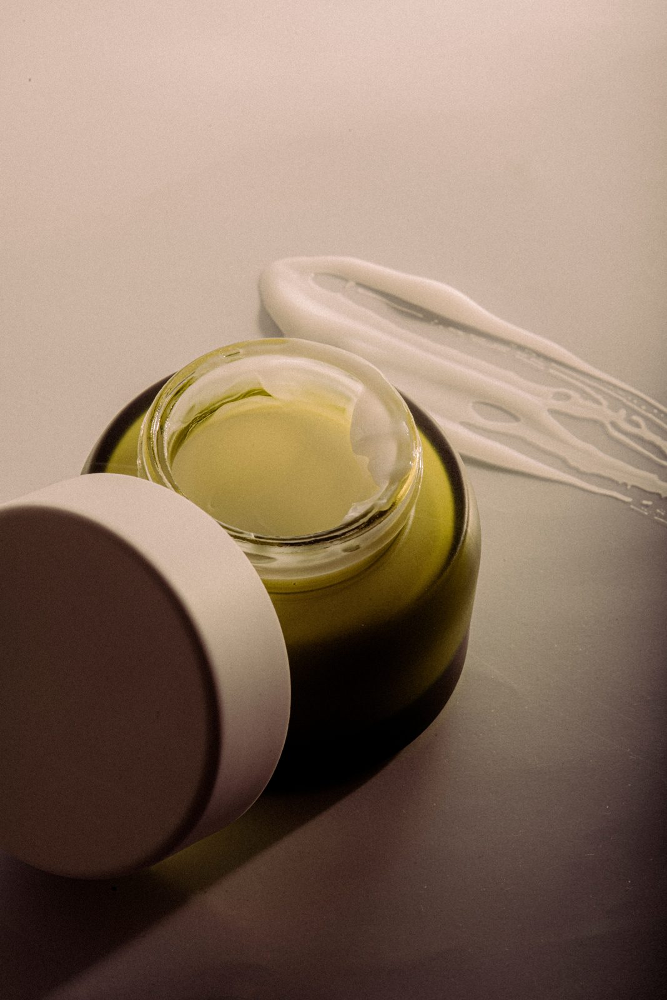

BAE stands for “Before Anybody Else.”
Putting yourself first, intentionally.
The idea comes from a familiar reality for many Indian women: they often spend their time caring for their family, partners, children, work and everyone around them, while their own needs are pushed to the end.
BAE MINIMUM was created to challenge that mindset. Our brand encourages women to put themselves first, not selfishly, but intentionally.
We believe self-care doesn’t have to mean hours of pampering or an elaborate routine. It should feel simple and practical, something that fits into a busy day.

Our values
Intentional self-care
Making time for yourself on purpose, without guilt.
Affordability
Care that fits a young professional’s or student’s budget.
Simplicity
Easy, practical steps that fit busy daily routines.
Essentials over excess
A minimal approach instead of complicated routines.
Emotional connection
Skincare is not just beauty. It is about feeling cared for.
Meet Ananya, 24.
An urban young professional or postgraduate student with a busy, career-focused life. She likes skincare but avoids complicated routines, and wants self-care to feel simple, affordable and easy, not like another task.
The people behind BAE MINIMUM
- Kanan Jain
- Paridhi Rathi
- Saloni Ramod
- Sanskruti Kshrisagar
- Urvashi Samarth